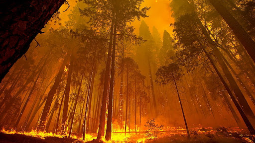

The Californina Wildfires Statewide Recovery Services site has links to a number of county agencies, insurance companies, charities, and other organizations that provide emergency and ongoing help during and following a wildfire event.
Being stranded is bad enough, but being stranded with little to no cell phone service can make the situation much worse. If you cant get a call out to family or friends, dont panic! A text message may have a better chance of reaching your recipient.
Since it takes more bandwidth to transmit a call, you may have trouble dialing out with a low signal. So, try texting instead! Unfortunately, you most likely will not be able to text 911. Only certain areas in the United States (and certain providers) allow this. However, calling 911 is a different story.
Thanks to the FCC, network providers must transmit an emergency call (911) regardless of whether you use their service or not. This means if your provider doesnt have coverage in that area, your phone will show that it has no service. But, another provider may offer coverage there and will transmit your 911 call for you. So, definitely give the call a try.
You can also reach 911 with a cell phone that is not associated with a provider. This means anold phone can be a great emergency device, especially if youre unable to reach your primary phone. As long as it has battery power and can reach a signal, the phone can connect to 911. However, keep in mind this means your call cannot be returned because there isnt a number associated with it. So, if the call gets disconnected, you need to be the one to call back.